Approve a crop only for its stated parent slide, context, and cue range. Generated items below are explanatory visual candidates only; they do not substantiate narration or replace source evidence.
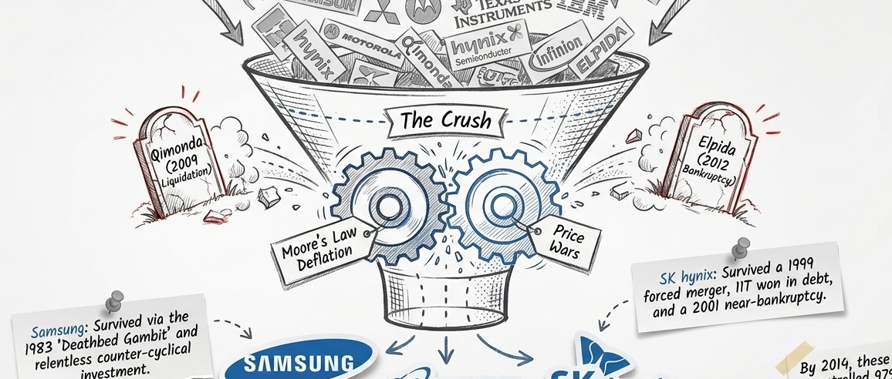
silicon-reality-gap-s05-triopoly-formation-v1
Source: silicon-reality-gap · slide 5
What it is: A hand-drawn consolidation scene with a crushing funnel, failed rivals, and the Samsung/Micron/SK hynix survivors.
Does not prove: It is a visual explanation of consolidation, not a complete historical dataset.
Candidate cues:
No direct current candidate; manual semantic review required.
REVIEW CROP — NOT YET RENDER-ELIGIBLE
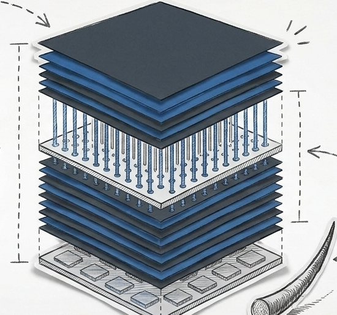
silicon-reality-gap-s07-hbm-stack-v1
Source: silicon-reality-gap · slide 7
What it is: The central illustrated HBM stack with layered dies, TSV connections, and a base package.
Does not prove: The crop does not by itself establish the numeric bandwidth or yield claims around it.
Candidate cues:
No direct current candidate; manual semantic review required.
REVIEW CROP — NOT YET RENDER-ELIGIBLE
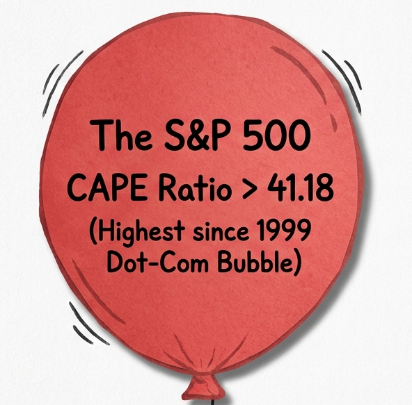
silicon-antidote-s02-valuation-bubble-v1
Source: silicon-antidote · slide 2
What it is: A red S&P 500 valuation balloon labeled with the source deck's CAPE comparison.
Does not prove: The crop preserves the source claim but is not independent verification of the metric.
Candidate cues:
No direct current candidate; manual semantic review required.
REVIEW CROP — NOT YET RENDER-ELIGIBLE
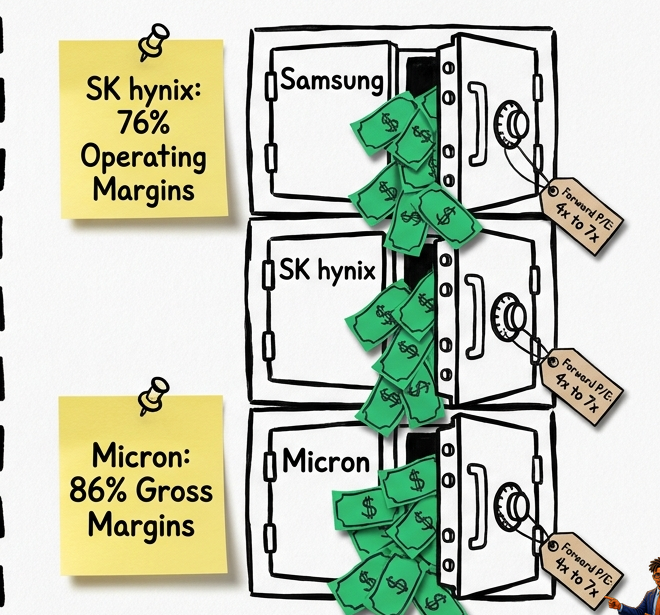
silicon-antidote-s02-memory-triopoly-v1
Source: silicon-antidote · slide 2
What it is: Three illustrated memory-company vaults with source valuation and margin cards.
Does not prove: The companies and figures remain source-deck evidence and should not be generalized beyond the cited research.
Candidate cues:
cbm-cue-086 · 288.3s — This is also bigger than three memory companies.
cbm-cue-254 · 856.3s — Memory has its own three failure points.
REVIEW CROP — NOT YET RENDER-ELIGIBLE
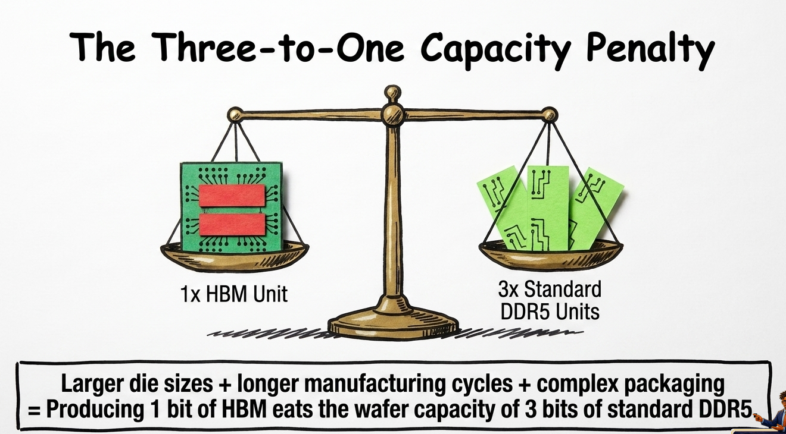
silicon-antidote-s09-capacity-penalty-v1
Source: silicon-antidote · slide 9
What it is: A balance-scale illustration comparing one HBM unit with three standard DDR5 units and the stated capacity penalty.
Does not prove: The visual comparison does not replace the underlying wafer-capacity calculation.
Candidate cues:
cbm-cue-054 · 178.1s — As manufacturers devote more capacity to HBM,
cbm-cue-059 · 196.2s — Samsung says concentrating capacity on HBM and server
REVIEW CROP — NOT YET RENDER-ELIGIBLE
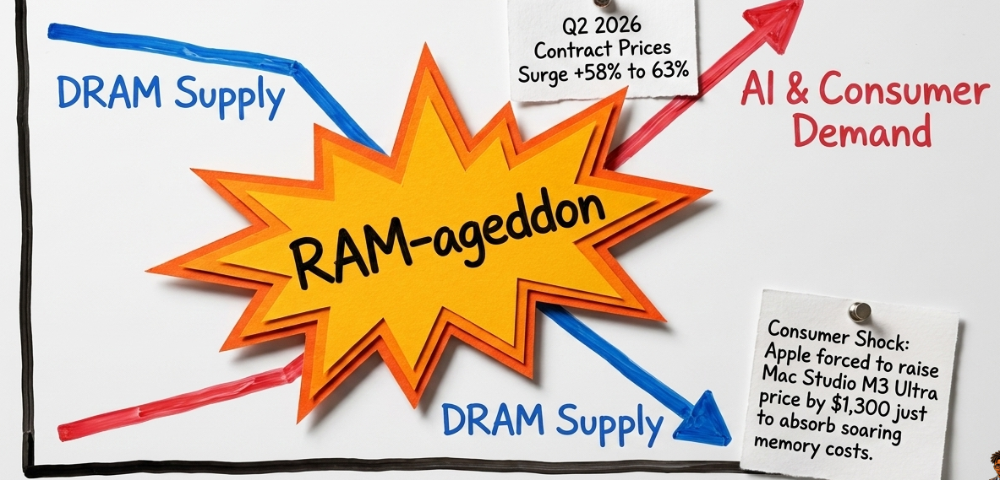
silicon-antidote-s10-ram-ageddon-v1
Source: silicon-antidote · slide 10
What it is: A central RAM-ageddon burst with opposing blue supply arrows, red demand arrows, and pinned source notes.
Does not prove: RAM-ageddon is a declared explanatory label, not a formal market classification.
Candidate cues:
cbm-cue-078 · 263.5s — while saying demand exceeded supply capacity.
REVIEW CROP — NOT YET RENDER-ELIGIBLE
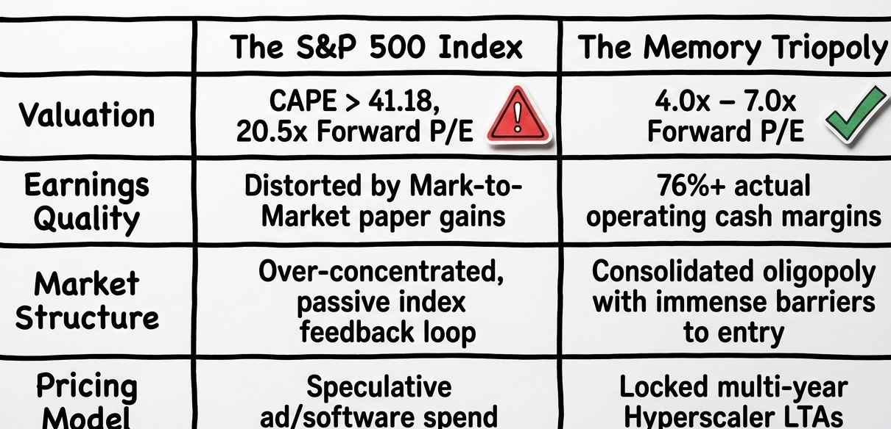
silicon-antidote-s14-diagnostic-matrix-v1
Source: silicon-antidote · slide 14
What it is: A two-column diagnostic matrix contrasting the S&P 500 index with the memory triopoly.
Does not prove: The matrix is a source summary and should remain bound to the report's evidence register.
Candidate cues:
cbm-cue-288 · 970.7s — memory has a cable. The “safe” index trade deserves a closer
REVIEW CROP — NOT YET RENDER-ELIGIBLE
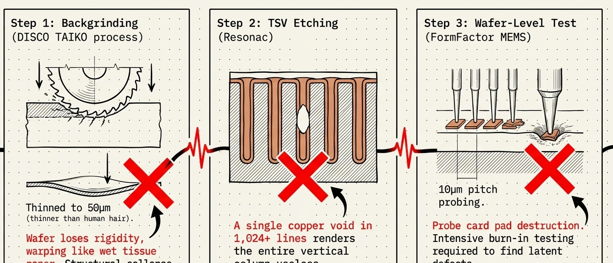
silicon-value-software-bubble-s08-failure-triptych-v1
Source: silicon-value-software-bubble · slide 8
What it is: A three-panel failure-point plate covering backgrinding, TSV etching, and wafer-level testing.
Does not prove: The three panels are a compact explanatory sequence, not a complete process specification.
Candidate cues:
No direct current candidate; manual semantic review required.
REVIEW CROP — NOT YET RENDER-ELIGIBLE
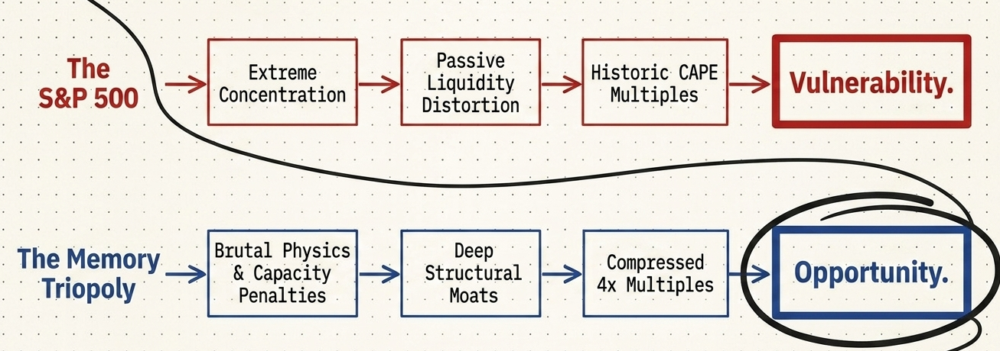
silicon-value-software-bubble-s15-opportunity-path-v1
Source: silicon-value-software-bubble · slide 15
What it is: A paired red vulnerability path and blue opportunity path linking valuation, liquidity, physical constraints, and compressed multiples.
Does not prove: The path is the deck's thesis summary, not an investment recommendation.
Candidate cues:
No direct current candidate; manual semantic review required.
REVIEW CROP — NOT YET RENDER-ELIGIBLE
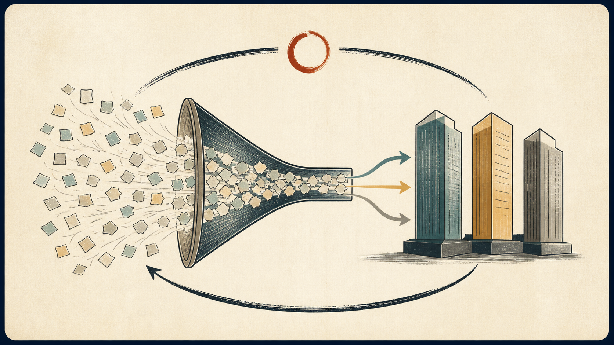
passive-index-feedback-loop-illustration-candidate-v1
Story use: Illustrate automatic capital-flow feedback while the index-concentration mechanism is discussed.
Permitted use: Explanatory illustration only; it carries no factual claim, metric, source citation, or literal evidence status.
Target: S&P 500 mechanism scenes, subject to later semantic-binding review.
GENERATED EXPLANATORY ILLUSTRATION — NOT LITERAL EVIDENCE
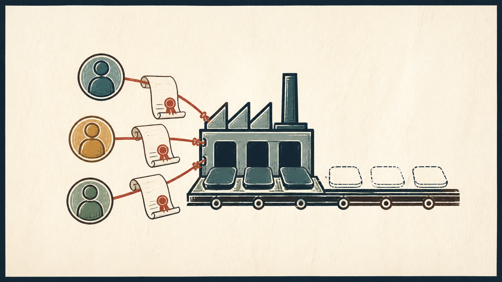
capacity-reservations-illustration-candidate-v1
Story use: Illustrate buyer commitments consuming open capacity while contracts/reservations are discussed.
Permitted use: Explanatory illustration only; it carries no factual claim, metric, source citation, or literal evidence status.
Target: Contracts and capacity scenes, subject to later semantic-binding review.
GENERATED EXPLANATORY ILLUSTRATION — NOT LITERAL EVIDENCE